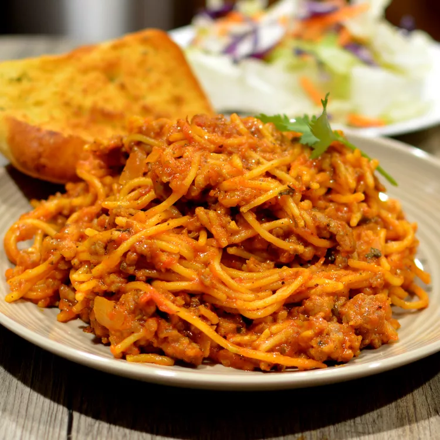

Spaghetti with Meat Sauce

Overview
Spaghetti and meat sauce is an easy, classic recipe.
This recipe is sourced from All Recipes, please visit their page to give a view and learn more about the recipe.
Ingredients
- 1 lb ground italian sausage
- 1 small white onion, diced
- 4 cloves garlic, minced
- 1 (26 ounce) jar tomato-basil pasta sauce
- 2 cups water
- 1 (8 ounce) package of spaghetti noodles, broken in half
- 1/2 cup freshly grated parmesan cheese (optional)
Directions
- Combine the sausage, onions, and garlic in a large pot or skillet and cook over medium heat until the sausage is fully cooked. Drain the excess grease.
- Combine the pasta sauce, water, and italian seasoning into a pot and bring to a boil. Add in the spaghetti noodles, return to a boil, and cook until the noodles are cooked through and sauce has thickened (15-20 minutes).
- Serve with (optional) grated parmesan on top.